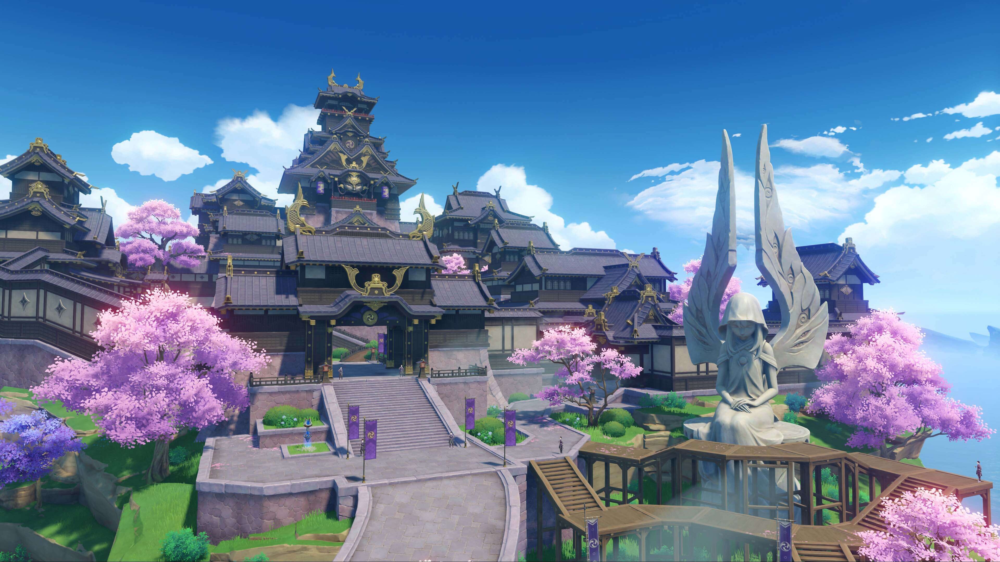

米哈游
米哈游是一家中国游戏开发公司,成立于2012年,总部位于上海。公司的创始人是刘伟。米哈游的第一款游戏是买断制游戏《Fly me 2 the
moon》,后来又推出了《崩坏2》和《崩坏3》等游戏。而《原神》是米哈游于2020年9月28日正式上线的游戏。
说到米哈游,大家首先就会想到的应该是它旗下的游戏ip,然而这只是米哈游ACG业务当中的最后一个字母G而已。
acg三个字母具体指的是animation动画,comic漫画以及game游戏,所以大体上来讲米哈游其实是一家ACG公司。

米哈游的使命是:技术宅拯救世界;"tech otakus save the world"。OTAKUS这个词是来自日文,おたく(ODAKU),中文准确的翻译叫“御宅族”,这个词在以前多少带点贬义,
形容日本动漫黄金的80年代,那些比较偏执、阴郁不太和人接触的动漫爱好者，现在大家乐于翻译成技术宅。
米哈游的愿景是,在“2030年,打造出全球十亿人愿意生活在其中的虚拟世界”。
纵观米哈游的发展史,allin,是一个很适合描述这个过程的词语,在米哈游退出崩坏学院2之后,
一年内他们达到了一亿的营收,当时摆在他们眼前的有两种选择,是赚了钱以后安稳运营或者分钱走人,还是继续allin下一部作品?
前者可以让你安稳地度过你的余生,后者一旦失败则满盘皆输。他们选择了再搏一把,把绝大部分的资金用来研发崩坏3,
事实证明他们又成功了,2016年10月,《崩坏3》正式上线,米哈游的市值再一次获得了飞跃性提升。
市值以亿为单位,数字来到两位数,mihoyo依旧选择保持当初的做法,拿出七成的人力和财力立项一个名叫《崩坏编年史》的项目。
后来该项目改名为《原神》。
我所介绍只是米哈游很小一部分历程,而且并不代表米哈游的发展史是看上去那么地顺利, 有关更多关于米哈游的信息,请点击: mihoyo
神之眼
神之眼是提瓦特大陆中，极少数人才能拥有的外置魔力器官，是释放元素力的媒介，拥有神之眼的人，都是有资格成神的【原神】
相传，当愿望过于强烈之时，神明就会向他投下视线，这个时候，神之眼便诞生了。
ps:这里我其实想放一张游戏内七元素神之眼并列一排的图片,但是找了很久都没有找到,将就用一下这张实物图片啦。
提瓦特世界观
提瓦特是一个由七个国家组成的世界,每个国家都有自己独特的文化和风貌。
蒙德
蒙德是位于提瓦特大陆东北部的自由城邦。在群山和广袤的平原间,自由之风携着蒲公英的气息吹拂过果酒湖,为坐落于湖心岛上的蒙德城送去风神巴巴托斯的祝福与恩泽。
蒙德城四面被果酒湖包围,仅一座石桥与外界连接,蒙德城后方是一座宏伟的教堂,名为"西风大教堂",教堂外广场上竖立着风神巴巴托斯的雕像。
璃月
璃月是位于提瓦特大陆中部的契约国度，在七国中以「岩」为信仰。璃月港是全提瓦特大陆最繁华且吞吐量最大的港口，其黄金屋也是全提瓦特统一货币“摩拉”的唯一制造所。
璃月中部傲然矗立着山麓与石林,广袤的平原与生机勃勃的河滩共同构成了璃月的丰富地貌，在四季分明的气候下焕发出多彩的风华。山石奇景间，岩之魔神的古老馈赠等待着人们的发掘。

稻妻
稻妻是位于提瓦特大陆东南方的雷之国度。稻妻是由七神中的雷神巴尔泽布所统治的国家，雷之神是一位追求永恒的神明，稻妻的人民在雷之神的带领下追随着永恒的足迹 只是，千世万代不变不移的【永恒】，所面对的不确定因素，似乎让这个国家陷入了危机之中。
须弥
须弥是草与木的国度,是位于提瓦特大陆西部的智慧之神的国度,在这里,知识是被当作一种资源来使用的,须弥人对智慧与知识的探求是永无止境的。
须弥的神明经历过换代,现代草神被须弥民众称为小吉祥草王,前代草神被须弥民众尊敬地称为大慈树王。大慈树王所留下来的遗产,是由神之心所运作的,名为“虚空”的系统,用来把知识作为资源来管理。
然而,智慧似乎正在成为智慧之神的敌人……
图中的这栋建筑叫做须弥城,实在找不到想要的图片我就直接上游戏用游戏的内置相机拍了一张2333